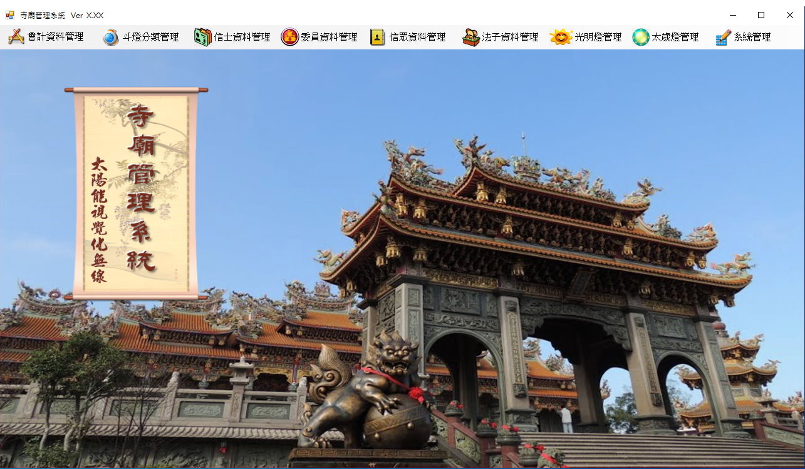
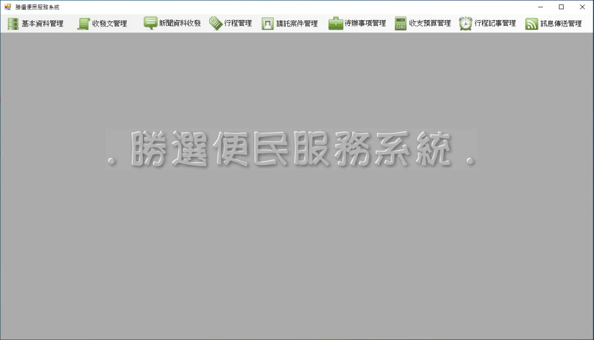
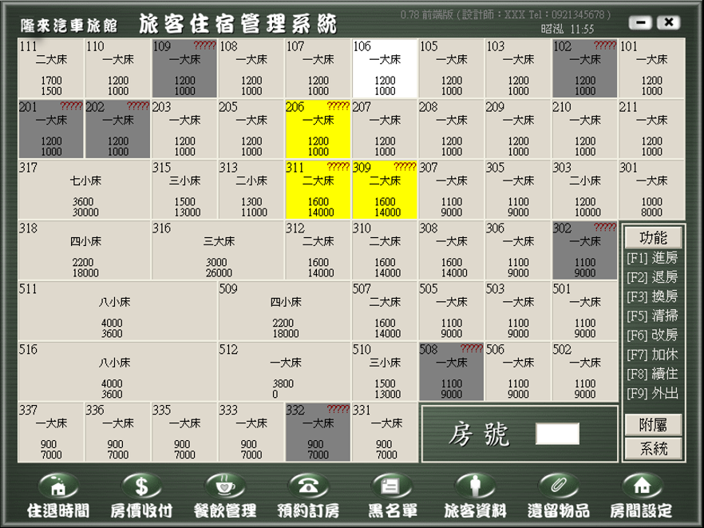

| ￭ 軟體實績介紹 ￭ |
| 寺廟管理系統 |  | ||||
| 寺廟管理系統:可提供外接 -太陽能- 或 -風力模組- 供應斗燈, 光明燈, 太歲燈的電力。 | |||||
| 提供信眾網路攝影機, 視覺化 360゜實際燈座點燈功能，或現場直接機器自動繳費點燈。 | |||||
| 提供管理者使用 WIFI, 藍芽無線, 連線可攜式 3C 行動裝置, 視覺化 360゜管理功能。 | |||||
| 提供管理者利用無線, 各種連網方式設備, 監控空氣污濁度、溫度、電力 數據, 定時自動或 | |||||
| 手動啟動空氣清淨設備 。 |
| 勝選便民服務系統 |  | ||||
| 勝選便民系統:提供組別經理人員管理, 親朋好友資料, 基本選民資料管理, 區域關聯人員連結設置。 | |||||
| 提供收文服務管理, 發文服務管理, 新聞資料收集, 新聞發佈管理, 行程管理。 | |||||
| 收受選民案件請託服務, 婚喪喜慶往來, 其他待辦事項 管理功能。 | |||||
| 預算分配管理, 辦事處支出管理, 內部留言記事, 人員行程分配管理。 | |||||
| 提供辦事人員 Line 通訊, eMail 訊息, 簡訊文件 傳送功能, 與行程相關報表輸出。 |
| 汽車旅館管理系統 |  | ||||
| 汽車旅館管理系統:提供觸控螢幕操作管理房務, 亦可使用 3C 設備, 離櫃即時查看管理。 |
| ￭ 其他軟體系統 ￭ | ||
| 遊藝店代幣管理系統 | 職業公會管理系統 | 證劵買賣管理系統 | ||||||
| 鷹架驗算分析管理 | 美髮業管理系統 | |||||||